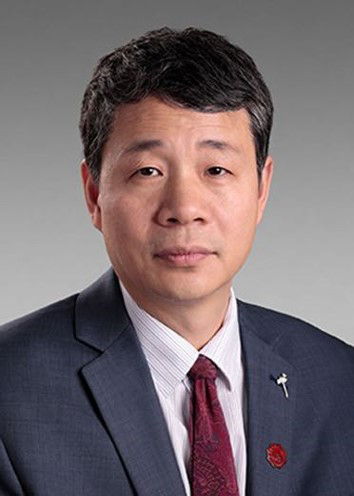

在校教师

董伟生
1981年4月生于浙江省兰溪市，人工智能学院教授，博导，副院长，国家级人才。主要从事图像视频处理、深度学习、计算机视觉方面的研究工作。在权威国际期刊和会议上发表论文100余篇，其中在TPAMI、IJCV、IEEE-TIP、CVPR、NeurIPS等顶级期刊和会议上发表论文60多篇。 论文被引用9000余次，2篇论文单篇引用超过1400余次。 曾任/现任包括国际顶级期刊IEEE Trans. on Image Processing、SIAM Journal on Imaging Sciences在内的3个期刊的编委(Associate Editor)、CVPR 2022领域主席。 主持包括国家部委重大项目、国家自然科学基金重大项目课题等项目。曾多次获得国家级青年人才称号。以第二完成人身份获2017年国家自然科学二等奖、2013年陕西省科学技术一等奖； 曾获2017年陕西省自然科学论文一等奖，VCIP 2010最佳论文奖。
详情
冯明涛
现任西安电子科技大学人工智能学院 副教授、硕导。 2020年1月于湖南大学控制科学与工程/电路与系统专业硕博连读并获博士学位，导师为王耀南教授（中国工程院院士）。2016年9月-2018年1月于University of Western Australia计算机与软件工程学院博士联合培养，导师为Ajmal Mian教授。兼任机器人视觉感知与控制技术国家工程研究中心研究员，中国图象图形学学会青年工作委员会/三维视觉专业委员会委员，中国计算机学会智能机器人专业委员会委员。 已在国际知名期刊/会议IEEE-TIP，IEEE-TII，IEEE-TMM，PR，CVPR，ICCV，ECCV等发表学术论文40余篇，担任IEEE T-IP，IEEE-TNNLS，IEEE-T-CYBER，IEEE-TIE，IEEE-TCSVT，PR，CVPR，ECCV等国际期刊/会议审稿人。计划竞赛全国金奖、华为全栈AI黑客松大赛亚军、UBC卵巢癌亚型分类及异常值检测竞赛国际金牌等。
详情
董乐
2016年6月在武汉大学获遥感科学与技术专业学士学位，2021年6月在中国科学院大学获信号与信息处理专业博士学位。现为人工智能学院华山准聘副教授，主要研究方向为高光谱遥感图像处理（混合像元分解、聚类、异常检测等）。 在IEEE TGRS、Remote Sensing 和 IGARSS等国际期刊和会议上发表论文数篇。。
详情
黄韬
现任西安电子科技大学杭州研究院 副研究员。2018年6月于西安电子科技大学获博士学位。2018年7月-2024年11月就职于阿里巴巴和支付宝，从事图像视频处理、多模态内容理解等领域研究。已在国际知名期刊/会议IEEE TIP，ICASSP等发表学术论文40余篇，担任IEEE TIP，CVPR等国际期刊/会议审稿人。主持浙江省“尖兵”“领雁”研发攻关计划子课题1项。
详情
汪振宇
博士毕业于西安电子科技大学，现为西电杭研院先进视觉研究所董伟生教授团队博士后。2018年6月于西安电子科技大学获微电子科学与工程专业学士学位，2023年12月获西安电子科技大学电子科学与技术专业博士学位，主要从事计算机视觉、深度学习、模型压缩及轻量化设计等方面的研究。 在NeurIPS、AAAI、IEEE TCSVT等人工智能领域国际顶级会议和高水平期刊发表论文多篇，授权专利多项，主持国自然青年基金1项，博后面上基金1项，获博后国资计划1项。
详情
朱宇凡
博士毕业于西安电子科技大学，现为西安电子科技大学人工智能学院董伟生教授团队博士后。 2018年获得西安电子科技大学电子科学与技术专业学士学位，2023年至2024年以访问学生身份在西班牙巴塞罗那自治大学计算机视觉中心ADAS组开展学术交流与研究。 2024年获得西安电子科技大学计算机科学与技术专业博士学位。主要研究方向为三维计算机视觉，聚焦于深度补全与无监督深度估计。 在AAAI、Neurocomputing等人工智能领域的国际顶级会议和高水平期刊上发表多篇论文。
详情校外教师

石光明(特聘教授)
西安电子科技大学教授，博士生导师。先后任西安电子科技大学国家工科电工电子教学基地主任，电子工程学院副院长，科学研究院常务副院长兼基础科研处处长，西安电子科技大学副校长。2012年入选国家级人才。现为IEEE Fellow、IET Fellow、中国电子学会会士、中国指挥与控制学会人机交互与虚拟现实专委会主任委员，中国电子学会智能人机交互委员会副主任委员，中国人工智能学会脑科学与人工智能专委会副主任委员。陕西省教学名师。陕西省电子学会副理事长。 主持国家基础加强和国自然重点项目，牵头荣获国家自然科学二等奖1项、省部级科学技术一等奖3项；牵头荣获国家级教学成果二等奖1项，参与荣获国家级教学成果二等奖2项；提出了语义通信的基本框架和国际首个语义通信参考架构标准并获批立项。
详情Li Xin(特聘教授)
Xin Li (Fellow, IEEE) received the B.S. degree (Hons.) in electronic engineering and information science from the University of Science and Technology of China, Hefei, China, in 1996, and the Ph.D. degree in electrical engineering from Princeton University, Princeton, NJ, USA, in 2000. He was a member of Technical Staff with Sharp Laboratories of America, Camas, WA, USA, from August 2000 to December 2002. Since January 2003, he has been a Faculty Member with the Lane Department of Computer Science and Electrical Engineering. In 2017, he was elected as a fellow of IEEE for his contributions to image interpolation, restoration, and compression.
详情